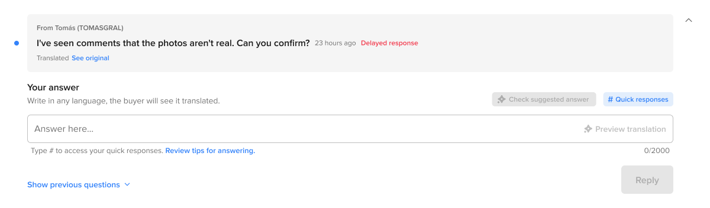

05 Mercado Libre · Questions & Answers
One conversation.
Different languages.
Automatic translation helped sellers and buyers communicate across languages, without leaving the same conversation.
01 / The challenge
Language was getting in the way of a clear answer.
Chinese- and English-speaking sellers and Spanish- and Portuguese-speaking buyers were meeting across a language gap in Mercado Libre’s questions-and-answers experience.
02 / The solution
Let everyone read and reply in their preferred language.
Automatic translation let sellers write in Chinese or English while buyers read in Spanish or Portuguese, all within one shared conversation.
The experience in motion
The complete journey in motion.

03 / The impact
Faster, more accessible communication.
The feature was well received and contributed to reducing response times. By removing manual translation, it made exchanges faster and more seamless for buyers and sellers.
One conversation
Different languages. No communication barriers.